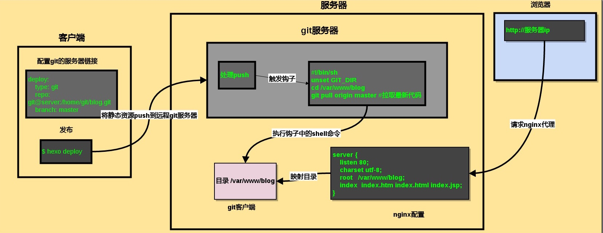

搭建过程
hexo 是一个快速、简洁且高效的博客框架。
Hexo安装
brew install git node # 安装git 和node
npm install -g hexo-cli # 安装hexo
proxychains4 hexo init Mr-Framework # 初始化博客
git clone https://github.com/yelog/hexo-theme-3-hexo.git themes/3-hexo # 下载3-hexo主题Hexo目录结构
Mr-Framework
├── _config.yml // 网站配置文件
├── node_modules // npm依赖模块目录
├── package-lock.json // node项目配置文件
├── package.json // node项目配置文件
├── scaffolds // 新建mardown文件模板目录
│ ├── draft.md
│ ├── page.md
│ └── post.md
├── source // 存放makrdown文件和图片
│ └── _posts
│ └── hello-world.md //hexo默认markdown文件
└── themes //hexo主题目录
└── 3-hexo
├── LICENSE
├── README.md
├── _config.yml //主题配置文件
├── languages //语言支持插件
│ ├── en.yml
│ └── zh-CN.yml
├── layout //布局文件
│ ├── _partial
│ ├── index.ejs
│ ├── indexs.md
│ └── post.ejs
└── source //主题源代码
├── css
├── img
└── jsHexo配置文件
# Hexo Configuration
## Docs: https://hexo.io/docs/configuration.html
## Source: https://github.com/hexojs/hexo/
# Site
title: Mr.Framework #网站标题
subtitle: 'subtitle' #网站副标题
description: '' #网站描述,主要用于SEO，告诉搜索引擎一个关于您站点的简单描述，通常建议在其中包含您网站的关键词
keywords: #网站的关键词,支持多个
author: askDing #作者
language: en #网站使用的语言
timezone: 'Asia/Shanghai' #时区，
# URL
## If your site is put in a subdirectory, set url as 'http://example.com/child' and root as '/child/'
url: https://askding.github.io
root: / # 网站根目录存放位置
permalink: :category/:title.html # 文章中的永久链接格式
permalink_defaults: # 永久链接中的默认设置
pretty_urls:
trailing_index: true # Set to false to remove trailing 'index.html' from permalinks
trailing_html: true # Set to false to remove trailing '.html' from permalinks
# Directory
source_dir: source # 资源文件夹，存放内容的
public_dir: public # 公共文件夹，用于存放生成的站点文件
tag_dir: tags # 标签文件夹
archive_dir: archives # 归档文件夹
category_dir: categories # 分类文件夹
code_dir: downloads/code # source_dir下的子目录,存放代码用的
i18n_dir: :lang # 国际化文件夹
skip_render: # 跳过指定文件的渲染，匹配到文件将直接复制到public目录中
# Writing
new_post_name: :year-:month-:day-:title.md # File name of new posts
default_layout: page
titlecase: false # Transform title into titlecase
external_link:
enable: true # Open external links in new tab
field: site # Apply to the whole site
exclude: ''
filename_case: 0
render_drafts: false
post_asset_folder: false
relative_link: false
future: true
highlight:
enable: false
line_number: true
auto_detect: false
tab_replace: ''
wrap: true
hljs: false
prismjs:
enable: false
preprocess: true
line_number: true
tab_replace: ''
# Home page setting
# path: Root path for your blogs index page. (default = '')
# per_page: Posts displayed per page. (0 = disable pagination)
# order_by: Posts order. (Order by date descending by default)
index_generator:
path: ''
per_page: 10
order_by: -date
# Category & Tag
default_category: askDing
category_map:
tag_map:
search: # 文章搜索
path: search.xml
field: _post
# Metadata elements
## https://developer.mozilla.org/en-US/docs/Web/HTML/Element/meta
meta_generator: true
# Date / Time format
## Hexo uses Moment.js to parse and display date
## You can customize the date format as defined in
## http://momentjs.com/docs/#/displaying/format/
date_format: YYYY-MM-DD
time_format: HH:mm:ss
## updated_option supports 'mtime', 'date', 'empty'
updated_option: 'date'
# Pagination
## Set per_page to 0 to disable pagination
per_page: 10
pagination_dir: page
# Include / Exclude file(s)
## include:/exclude: options only apply to the 'source/' folder
include:
exclude:
ignore:
# Extensions
## Plugins: https://hexo.io/plugins/
## Themes: https://hexo.io/themes/
theme: 3-hexo
## Plugins: http://hexo.io/plugins/
#RSS订阅和sitemap
plugin:
- hexo-generator-feed
- hexo-generator-feed
- hexo-generator-sitemap
#Feed Atom
feed:
type: atom
path: atom.xml
limit: 20
# Deployment
## Docs: https://hexo.io/docs/one-command-deployment
deploy:
type: 'git'
repository: https://github.com/askDing/askDing.github.io.git
branch: master
主题配置
Mr-Framework/themes/3-hexo/_config.yml
<–
- 代码块
位置：source/css/_partial/post.styl:229
2.页面字体、字号
大屏字体：
字体位置：source/css/style.styl:8
字号位置：source/css/_partial/post.styl:3
中屏字体：
字体位置：source/css/mobile.styl:3
字号位置：source/css/mobile.styl:17
手机字体：
字号位置：source/css/mobile.styl:146
–>
基础配置
UI颜色配置
Mr-Framework/themes/3-hexo/source/css/_partial/nav-right.styl
.nav-right
width 420px
height 100%
background #F2F1D7 /* 柔黄色 */
border-right 1px solid #e5e8ec
overflow hidden
float left
position relative
-webkit-user-select none
-moz-user-select none
-ms-user-select none
-o-user-select none
user-select noneMr-Framework/themes/3-hexo/source/css/_partial/post.styl
#post
height 100%
font-weight: 350;
font-size: 14px;
line-height 1.55
background #E8FFE8 /* 浅绿色 */
overflow-x hidden
overflow-y auto
-webkit-overflow-scrolling touch
font-family -apple-system,system-ui,BlinkMacSystemFont,Helvetica Neue,PingFang SC,Hiragino Sans GB,Microsoft YaHei,Arial,sans-serif
color #2f2f2f
margin-left 1px
article
padding 1em /* 内容间隔1em */
background #E8FFE8
.article-entry>p:nth-child(1)
margin-top 20px
.copyright
margin-top 50px
padding-bottom 30px
background #E8FFE8 /* 版权浅绿色 */
line-height 14px
text-align center
color #BCC1C4头像配置
图片存放在 Mr-Framework/themes/3-hexo/source/img/
avatar: /img/avatar.png
favicon: /img/avatar.png联系链接配置
ink:
theme: color # 链接样式，color: 彩色图标 white: 黑白图标
items:
rss: /atom.xml
github: https://github.com/askDing
email: askding@qq.com
qq: 741474596文章分类设置
category:
num: true # 分类显示文章数
sub: true # 开启多级分类
sort:
- Cyber Security
- aaa
- bb左下角自定义菜单
menu:
about: # '关于' 按钮
on: true # 是否显示
url: /about # 跳转链接
type: 1 # 跳转类型 1：站内异步跳转 2：当前页面跳转 3：打开新的tab页
friend: # '友链' 按钮
on: true # 是否展示
menus: # 添加的其他菜单写在 menus 下，如下三个菜单：动态菜单1、动态菜单2、动态菜单3
相册:
on: false
url: /photo
type: 1 # 跳转类型 1：站内异步跳转
叶落阁:
on: false
url: http://yelog.org/
type: 2 # 跳转类型 2：当前页面跳转
github:
on: false
url: https://github.com/yelog
type: 3 # 跳转类型 3：打开新的tab页
文末声明
# 文末声明
article_txt: 转载请注明来源，欢迎对文章中的引用来源进行考证，欢迎指出任何有错误或不够清晰的表达。可以在下面评论区评论，也可以邮件至 askding@qq.com
bottom_text: ©1996-2020 Mr.Framework
# 自定义页面最下方的站点版权信息
# 如果不填，则自定义为 ©2017 author (这个author为hexo根目录_config.yml中配置的)
# 底部备案号
miit:
on: false
info: 京ICP证030173号
url: http://beian.miit.gov.cn/ # 默认链接为 http://beian.miit.gov.cn/
左侧导航宽度
Mr-Framework/themes/3-hexo/source/css/_partial/nav-left.styl
.nav-left
width 130px /* 左侧导航宽度 130px */
height 100%
background #2A2935
box-shadow inset -15px 0 15px -15px #222
float left
position relative
-webkit-user-select none
-moz-user-select none
-ms-user-select none
-o-user-select none
user-select none不蒜子网站计数配置
# 不蒜子网站计数设置
# http://ibruce.info/2015/04/04/busuanzi/
visit_counter:
on: true
site_visit: true
page_visit: true
代码高亮配置
- 禁用网站配置文件里的代码高亮设置
Mr-Framework/_config.yml
highlight: enable: false /* 禁用代码高亮 */ line_number: true auto_detect: false tab_replace: '' wrap: true hljs: false - 启用主题配置文件里的代码高亮
Mr-Framework/themes/3-hexo/_config.yml
highlight: on: true # true开启代码高亮，开启需要关闭博客 _config.yml 中的 highlight lineNum: false # true显示行号 copy: true # 复制功能 theme: gruvbox-dark
MathJax数学公式
修改 _config.yml
# MathJax 数学公式支持
mathjax:
on: true #是否启用
per_page: false # 若只渲染单个页面，此选项设为false，页面内加入 mathjax: true
yaml复制代码考虑到页面的加载速度，支持渲染单个页面。
设置 per_page: false ,在需要渲染的页面内 加入 mathjax: true
注意:
由于hexo的MarkDown渲染器与MathJax有冲突，可能会造成矩阵等使用不正常。所以在使用之前需要修改两个地方
编辑node_modules\marked\lib\marked.js脚本
将451行 ，这一步取消了对
\\,\{,\}的转义(escape)escape: /^\\([\\`*{}\[\]()# +\-.!_>])/, 改为 escape: /^\\([`*\[\]()# +\-.!_>])/,将459行，这一步取消了对斜体标记
_的转义em: /^\b_((?:[^_]|__)+?)_\b|^\*((?:\*\*|[\s\S])+?)\*(?!\*)/, 改为 em:/^\*((?:\*\*|[\s\S])+?)\*(?!\*)/,
高级配置
字数统计
word_count: false
# true 开启字数统计
# 开启此功能需要安装插件 ：在 hexo根目录 执行
npm install hexo-wordcount 全部搜索
searchAll: false
# true 启用全文搜索
# 开启此功能需要下面操作：
# 1. 在 hexo 根目录 执行 npm install hexo-generator-search --save 安装插件
# 2. 在 hexo 根目录的 _config.xml 中添加下面内容
# search:
# path: search.xml
# field: post
npm install hexo-generator-search添加RSS和Sitemap
##>>>>>>>在网站配置文件中Mr-Framework/_config.yml添加如下内容 <<<<<<<<<<<<###
## Plugins: http://hexo.io/plugins/
#RSS订阅和sitemap
plugin:
- hexo-generator-feed
- hexo-generator-sitemap
#Feed Atom
feed:
type: atom
path: atom.xml
limit: 20
##### 在主题配置文件中Mr-Framework/themes/3-hexo/_config.yml添加如下内容 <<<<<<<######
link:
theme: color # 链接样式，color: 彩色图标 white: 黑白图标
items:
rss: /atom.xmlnpm install hexo-generator-feed hexo-generator-sitemap 404页面
- 进入 Hexo 所在文件夹，输入
hexo new page 404; - 打开刚新建的页面文件，默认在 Hexo 文件夹根目录下 /source/404/index.md；
- 在顶部插入一行，写上
permalink: /404，这表示指定该页固定链接为http://"主页"/404.html
---
title: 404
permalink: /404
date: 2016-09-27 11:31:01
---
---
## 页面未找到！评论系统gitalk配置
注册OAuth Application
点击此处 来注册一个新的 OAuth Application。

修改主题配置文件
/Mr-Framework/themes/3-hexo/_config.yml
##########评论设置#############
comment:
on: true
type: gitalk # 评论系统：gitalk、disqus、gitment、utteranc、livere,注意：使用时，在下方对应位置进行配置
comment_count: true # 文章标题下方显示评论数 目前仅支持 gitalk 和 disqus
## 使用说明 https://yelog.org//2020/05/23/3-hexo-comment/
# 各评论系统配置 ↓↓
gitalk:
githubID: askDing # githubID: github用户名
repo: askDing.github.io # repo: 使用哪个仓库的issue
ClientID: 3675559917bdc294608c # 创建 OAuth application 就会生成：
ClientSecret: a826e0ded6d8b29a5bb77843f4c3805ecf7b263f # 创建 OAuth application 就会生成
adminUser: askDing # 使用自己的 github 用户名即可
distractionFreeMode: true # 全屏遮罩效果
language: zh-CN # 支持：en / zh-CN / zh-TW 三种
perPage: 10 # 每次加载的数据大小，默认10，最大100npm install gitalk # 安装gitalk模块Github部署
配置deploy
# Deployment
## Docs: https://hexo.io/docs/one-command-deployment
deploy:
type: 'git'
repository: https://github.com/askDing/askDing.github.io.git
branch: masternpm install hexo-deployer-git. # 安装git部署插件
hexo d # 部署到github备份博客
cd Mr-Framework && git init #进入博客目录并初始化git
git remote add origin https://github.com/askDing/Mr.Framework.git # 添加远程git仓库
git add . && git commit -m "My Blog Backup" # 初次提交到本地暂缓区
git push --set-upstream origin master # 设置上游分支
git push origin master # 上传到Github
hexo clean && hexo g && hexo d && git add . && git commit -m " `date` " && git push -f # 部署到Github并进行备份
快捷命令
在.zshrc中添加
alias hs='cd ~/Mr-Framework && hexo clean && hexo g && hexo s' # 启动本地服务
alias hdb='cd ~/Mr-Framework && hexo clean && hexo g && hexo d && git add . && git commit -m " `date` " && git push -f' # 部署到Github并进行备份转载请注明来源，欢迎对文章中的引用来源进行考证，欢迎指出任何有错误或不够清晰的表达。可以在下面评论区评论，也可以邮件至 askding@qq.com